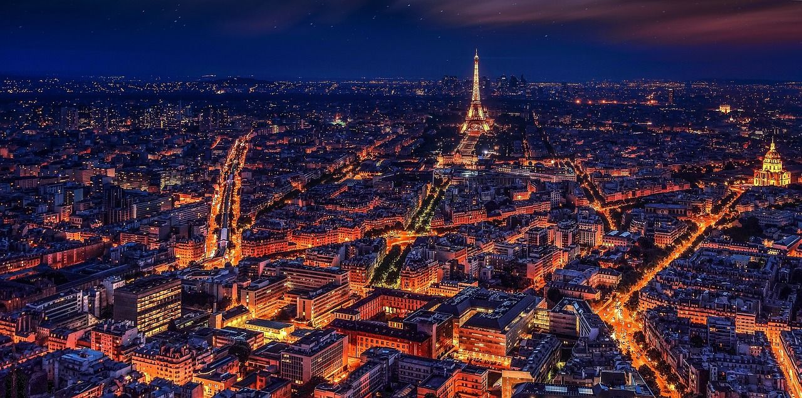
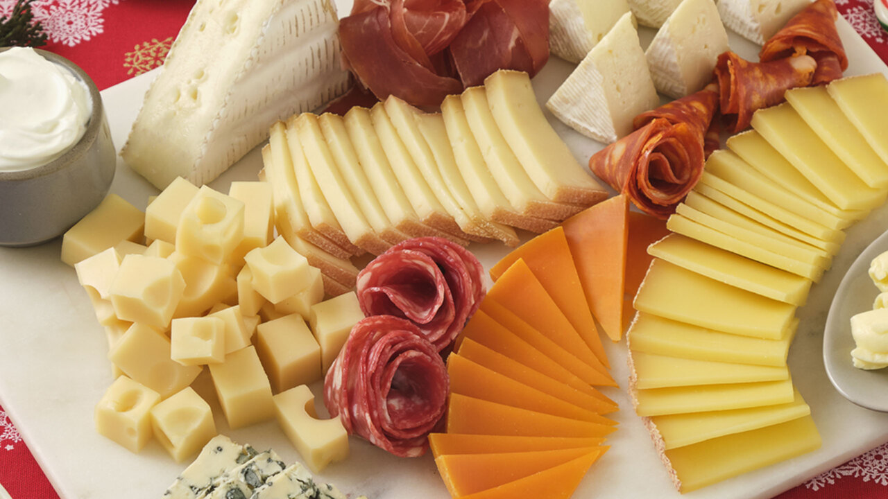

Viajes Culinarios
¡Bienvenidos a un recorrido gastronómico por tres destinos fascinantes!
Costa Rica, Colombia y Francia nos invitan a explorar sus sabores únicos y tradiciones culinarias que
cautivan los sentidos. Desde la frescura tropical de la "pura vida" costarricense hasta la explosión de
sabores de la cocina colombiana, y la sofisticación de la alta cocina francesa, este viaje nos sumergirá
en una experiencia culinaria inolvidable.
¡Acompáñennos en este viaje culinario y descubran la magia que se encuentra en cada bocado!
Imagen del País
Francia
Francia es un país situado en Europa, conocido por su rica historia, cultura y alta cocina. Es considerado uno de los destinos culinarios más prestigiosos del mundo.
Ingredientes Destacados
Los ingredientes destacados en la cocina francesa incluyen quesos variados, vinos finos, mantequilla, hierbas frescas como el tomillo y el estragón, champiñones, trufas, foie gras, pescado y mariscos frescos, entre otros.
Video
Tradiciones Culinarias
La cocina francesa se caracteriza por su elegancia y sofisticación. Algunas de las tradiciones culinarias incluyen la elaboración de platos como el coq au vin, boeuf bourguignon, ratatouille, croissants, escargots, crème brûlée, entre otros.
Imagen de los Platillos
PDF de Recetas
Restaurantes en Google Maps
Verse Toujours
El comedor de la planta baja es más informal, mientras que el comedor del piso superior es más formal. Ambos comedores están decorados con molduras de madera, espejos y lámparas de araña antiguas.
La carta de vinos de Verse Toujours es extensa e impresionante, con vinos de todas las regiones de Francia. El restaurante también ofrece una selección de vinos por copa.
La Maison du Boulevard
El restaurante está compuesto por un gran comedor luminoso y aireado. El comedor está decorado
con paredes blancas, suelos de madera y muebles modernos.
El menú de La Maison du Boulevard ofrece una cocina francesa moderna e inventiva. El chef Dumas
utiliza ingredientes frescos y de temporada para crear platos únicos y sabrosos.
Restaurante Nuestra Tierra
El comedor de la planta baja es más informal, mientras que el comedor del piso superior es más formal. Ambos comedores están decorados con paredes blancas, suelos de madera y muebles modernos.
El menú de Alliance ofrece una cocina francesa gastronómica e inventiva. El chef Lignac utiliza ingredientes frescos y de temporada para crear platos únicos y sabrosos.
Es un lugar ideal para disfrutar de una comida gastronómica francesa en un entorno elegante y refinado.